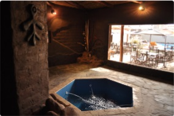
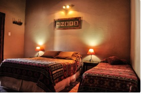
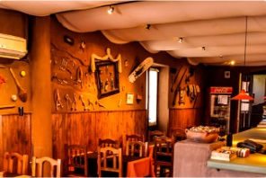
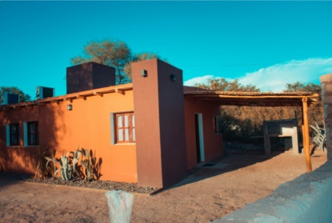
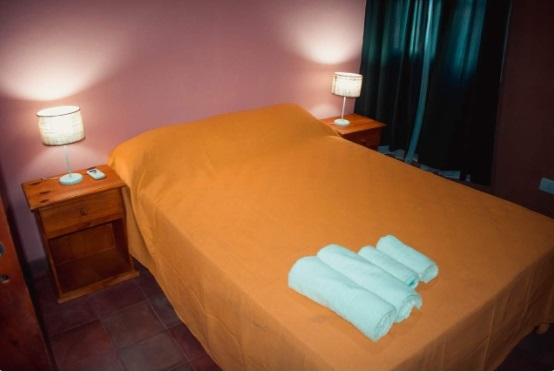
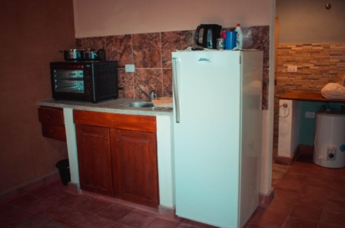

| Alojamiento | Dirección | Telefono |
|---|---|---|
| Hotel Santé | 25 de mayo 53 SUR. A dos cuadras y media de la plaza principal |
3837-471798 jaledcabur@hotmail.com.ar - santehostal@live.com |
| Hotel Nicolas | Pte. Perón 231 | 03837-420028 |
| Hotel de Turismo | 25 de Mayo Esq. Moreno | 03837-421088 |
| Hotel Casa Grande | Moreno 801 | 03837-421140 / 1168404638 |
| Hotel San José | Dr. Antonio del Pino 425 | 03837-693628 |
| Hotel María Elena | El Puesto | |
| Las Pircas Hotel Boutique | Anillaco | 3835 483176 |
| Hostal Sisabel | Calle 12 de Octubre B° Jardin | 03837 434672 / 2974430419 |
| Hostal Las Parinas | Moreno 439 | 03837-420416 |
| Hosteria Novel | Av. Córdoba 200 | 03837-435314 |
| Hosteria El Antigal | Copacabana | 03837-15414944 |
| Residencia el Viajante | Av. Illia s/n | 03837-420830 |
| Residencia San Francisco | Moreno 784 | 03837-475201 |
| Residencia El Emperador | Catamarca 655 | 03837-420702 |
El hostal esta compuesto por 10 habitaciones de las cuales 7 se encuentran en la parte inferior y 3 en 1 piso acceso por escalera. todas las habitaciones cuentan con, baño privado, tv, wifi, aire acondicionado frio calor. heladera frigobar. Nuestros baños son amplios, y contamos con una habitacion adaptada para personas con discapacidad motris ( siempre consultar disponibilidad) los baños estan provistos de bidet, secador de pelo. en nuestras instalaciones contamos con wi-fi en todo el establecimiento. servicio de estacionamiento, patio, bar kincho con asadores y acceso a una cocina de uso comun
Ubicacion: 25 de mayo 53 SUR. a dos cuadras y media de la plaza principal
Datos de Contacto Whatsapp : +5493737471798
Mail : jaledcabur@hotmail.com.ar santehostal@live.com
Casagrande Hotel de Adobe, es un hotel boutique con Piscina, Jacuzzi, Restaurante y Winery. Ubicado a 200mts de la plaza principal, forman parte de La Ruta del Adobe con un casco historico del año 1890.
Pagina Web: https://www.casagrandetour.com
Ubicacion: Moreno 801
Mail : Info@casagrandetour.com
Telefono Fijo : 03837 421140
  El proyecto CABAÑAS del INDIO nace en el amor y agradecimiento a mi pueblo Tinogasteño. Este esfuerzo familiar en ejecución está orientado a brindar los mejores servicios al turismo. Para ello ya contamos con un bloque de dos cabañas, entre otras en marcha, que ya está habilitada y consta de: Cocina-comedor equipada con una mesa, cinco sillas, heladera, horno eléctrico con dos anafes, TV led de 30', ventilador de techo de madera. -- Dos dormitorios. Uno de ellos está equipado con un somier de 2 1/2 plazas, mesa de luz, veladores, aire acondicionado Split frío/calor. El otro dormitorio tiene dos somier de 1 1/2 plaza, mesa de luz, velador, aire acondicionado Split frío/calor. Cocina-comedor equipada con una mesa, cinco sillas, heladera, horno eléctrico con dos anafes, TV led de 30', ventilador de techo de madera. -- Dos dormitorios. Uno de ellos está equipado con un somier de 2 1/2 plazas, mesa de luz, veladores, aire acondicionado Split frío/calor. El otro dormitorio tiene dos somier de 1 1/2 plaza, mesa de luz, velador, aire acondicionado Split frío/calor. Cada cabaña con su correspondiente baño y ante baño, termotanque. Hay mata fuego en cada cabaña. Cada cabaña tiene su asados y su quincho parrillero que tambien sirve de proteccioón al auto. Si bien son cabañas para cuatro personas, hay espacio suficiente para agregar otro somier si hiciera falta. También se cuenta con un servicio completo de vajilla y toilette. En breve habilitaremos otro bloque de cabañas de un dormitorio y el salón de recepción. Nuestras cabañas se encuentran en calle Moreno 165. FORMAS DE PAGO: Efectivo, Tarjetas de Crédito y débito, Transferencia bancaria.
  "Hotel Nicolas" (Tinogasta/Catamarca) es un emprendimiento familiar. FUE CREADO EN EL AÑO 1963 POR SU DUEÑO DON NICOLAS OLIVERA Y SU SEÑORA ESPOSA DALMIRA NIEVA DE OLIVERA. ERA UNA CASA MUY GRANDE DONDE VIVÍA CON SU FAMILIA. TODO COMENZÓ CUANDO UN DÍA CONVERSANDO CON VIAJANTES QUIENES LE COMENTARON QUE NO HABIA LUGAR PARA ALOJARSE, DECIDE ABRIR LAS PUERTAS DE SU HOGAR PARA DAR VIDA AL HOTEL NICOLAS Y TAMBIEN BRINDAR EL SERVICIO DE ALMUERZO Y CENA A SUS CLIENTES.
Ubicado en calle Presidente Perón 231 y cuenta con los siguientes servicios: